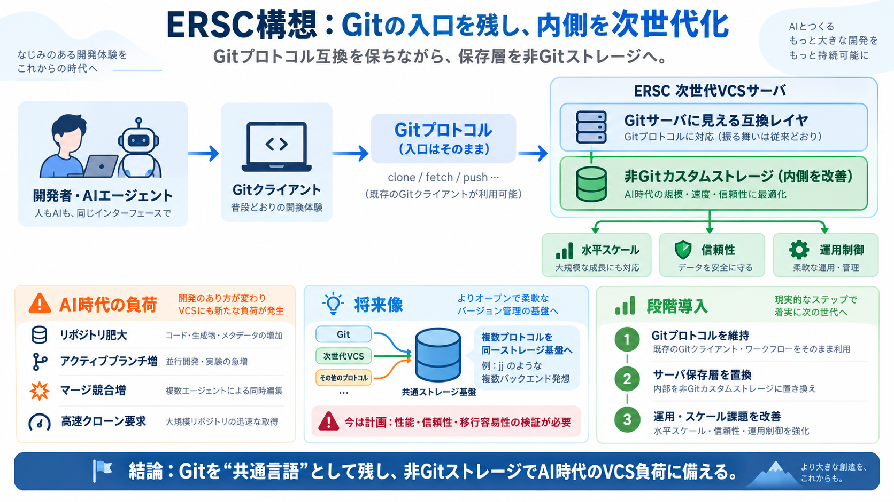

2026 Jujutsu (jj) vs Git: Undoable Ops, No Staging
Think about it: most developers don't write raw HTTP requests. They use libraries and frameworks. Jujutsu is positioning…

Gitプロトコル（入口）は維持しつつ、サーバの保存層（ストレージ）だけを非Gitの仕組みに置き換える――ERSCの方針です。
AIエージェントによる開発が加速すると、リポジトリ肥大・アクティブブランチ増・マージ競合増・高速クローン要求が同時に起き、従来のGit前提運用がボトルネックになり得ます。
ERSCは「速さ」だけでなく、運用・競合・インフラ負荷まで含めてVCSの再設計が必要だと主張します。
Gitを全面否定するのではなく、Gitプロトコルを“当面の共通言語”として残し、内部の保存方式だけを替える発想です（Git protocol維持）。
クライアントからはGitサーバに見える一方、サーバ内部ではGitリポジタリをそのまま保存せず「非Gitのカスタムストレージ」を使うことで、水平スケールと信頼性・運用制御を高めます。
Gitは現在も有効だが、2005年の制約で設計されており、2035年を見据えた大規模・高頻度・クラウド分散開発には最適化されていない、という立場です。
“別VCSへ完全移行”ではなく、技術的ボトルネックだけを減らすことで導入コストを抑える思想です（段階導入に適合）。
Jujutsu（jj）は複数バックエンドと通信できる設計で、ERSCは同様に将来「ネイティブプロトコル橋渡し」のように複数の流儀を同一ストレージ基盤につなげたいと述べています。
記事は「将来の取り組み」であり、現時点では利用可能な機能が限定される可能性が高いことを明確にしています（例：jjネイティブプロトコルの前提不在）。
VCSはコードレビュー・CI・課題管理など周辺スタックと一体運用されがちですが、ERSCはまずストレージ基盤を作り、他のスタックと協調できる部品として展開する方向性です。
ERSCアプローチは「互換性を守りつつボトルネック改善」を狙う点で説得力がありますが、“いつ・どこまで・どれくらい”が不明なため、性能（クローン時間等）・信頼性・運用コスト・移行容易性・機能互換の検証計画が必要です。
Gitを入口として残し、ストレージ層を非Gitへ置換することで、AI時代のスケール/運用課題に段階的に対処する――これがERSCの次世代VCS構想です。
Think about it: most developers don't write raw HTTP requests. They use libraries and frameworks. Jujutsu is positioning…
Jujutsu uses Git's on-disk format. Reads and writes the same `.git` directory. Your teammates keep using `git` while you…
Jujutsu is a new version control system that's gaining in popularity. Its swappable backends allow users to continue usi…
while maintaining compatibility with existing Git workflows. Gain understanding of the system's design philosophy and ke…
| | | | | --- --- | | | | | | --- | | | tfsh on June 5, 2025 | next (javascript:void(0)) A JJ forge is t…